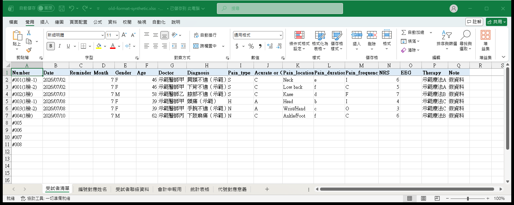
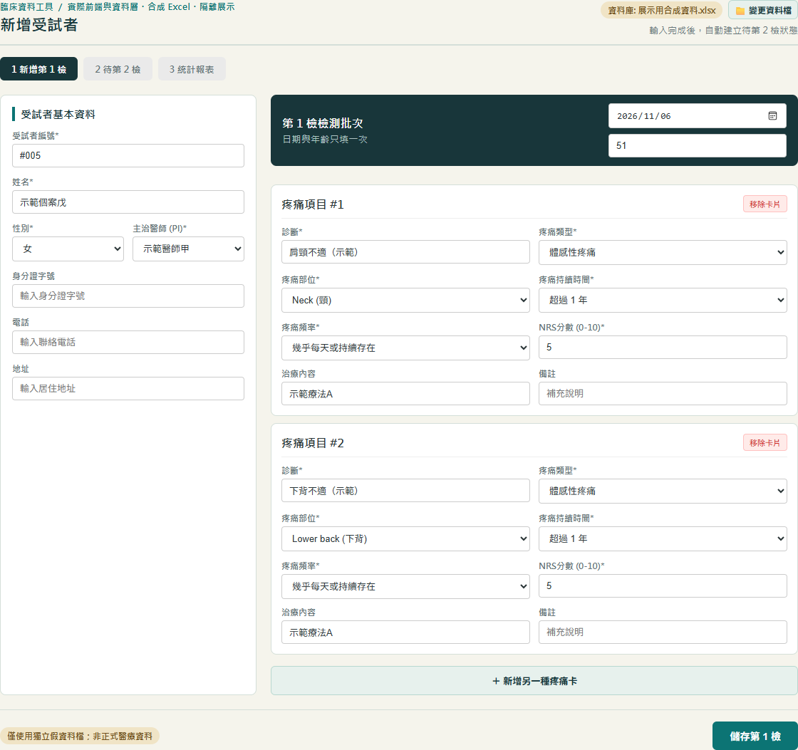
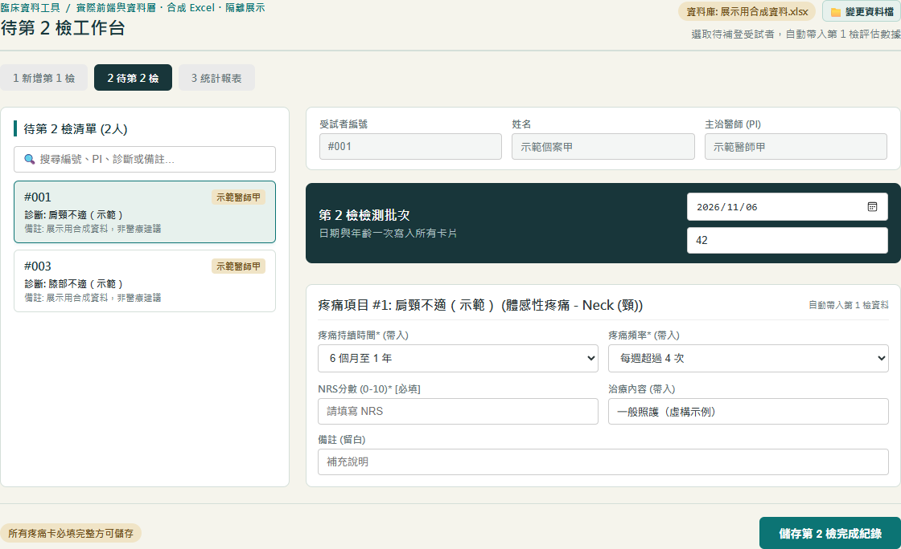
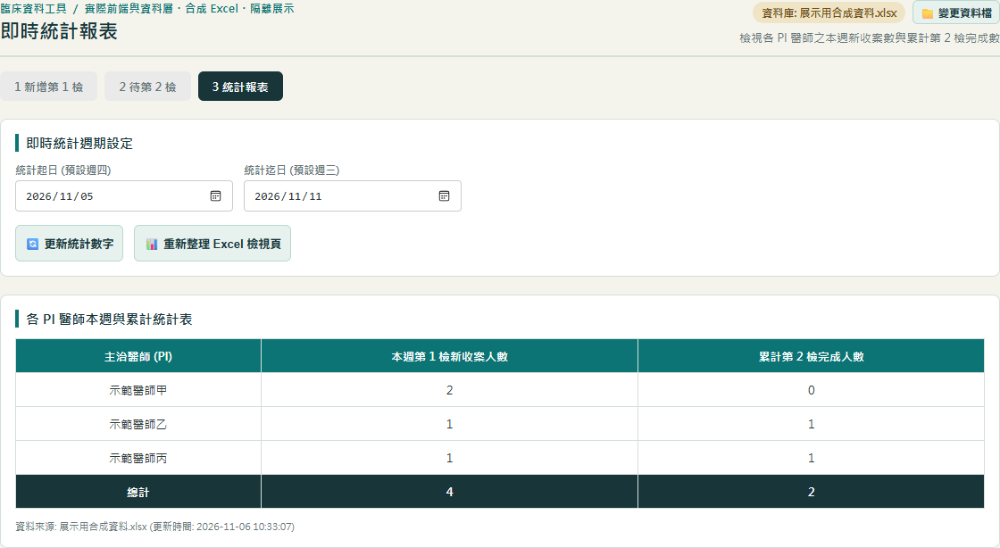

臨床資料工具 ／ 讓既有資料更容易使用
不用換掉 Excel，也能整理輸入流程。
以既有 Excel 為資料來源，將資料輸入、後續補登與統計檢視整理成 Windows 工具。
從工作需求出發
接手臨床收案後，我發現資料不只有第一次輸入，還有第二次評估要追蹤；但誰還沒做第二次，原本在電子檔裡看不出來，要靠紙本對照。工具把這些操作集中到分頁介面，同時保留 Excel 作為唯一資料來源。
原本 vs 現在
| 環節 | 原本 | 現在 |
|---|---|---|
| 輸入資料 | 直接在 Excel 清單逐格填寫 | 用表單輸入，必填欄位會先檢查 |
| 第二次評估 | 誰還沒做第二次，電子檔看不出來，要對照紙本依我的工作經驗 | 自動列出待補登個案，選取後帶入第一次的評估資料 |
| 個資位置 | 姓名與聯絡資料分在不同工作表，用編號對應 | 在同一張表單填完，存進對應的工作表 |
約 2 天做出第一個可用版本
2 位收案人員實際使用
近 200 名受試者紀錄由工具管理（截至 2026 年 11 月）
為什麼保留 Excel
這是摩擦力最小的做法：不需要安裝特殊程式，一般人都能直接打開 Excel 確認資料；萬一有誤錄，也能直接在 Excel 修改。工具另外提供「重新整理檢視頁」，直接改過的資料也能同步回來。
做出的功能
新增資料、待補登清單、統計報表與資料檔選取；寫入或重新整理前先建立備份。
還沒解決的事
現場不一定隨時開著電腦，所以有些第二次評估的追蹤仍要靠紙本。這讓我理解：工具做好，不代表工作問題全部解決，還要依現場使用情境再調整。
這次展示的選擇
右側第一張是依舊格式重建的 Excel，其餘三張是工具的實際畫面；資料全部是虛構的：另外建立一份合成 Excel，讓原本的工具讀取並計算。沒有打開正式受試者資料，也不公開公司或試驗名稱。




我負責說明工作需求、操作流程、使用後的問題回饋與驗收。
AI Agent 協助介面與 Excel 讀寫程式實作，依回饋修正行為。
目前界線：截圖由原本的介面與資料程式處理合成 Excel 產生，以瀏覽器開啟、未使用桌面安裝版；醫師與個案名稱皆為虛構。